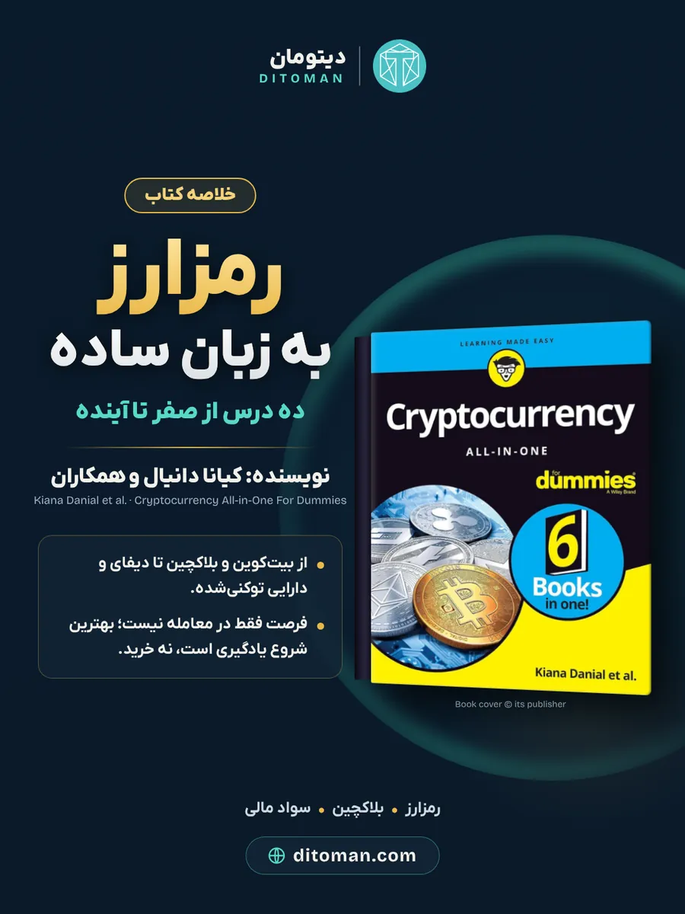
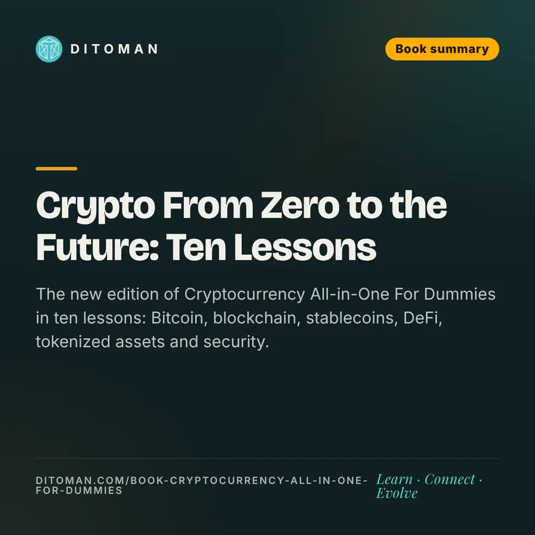

خلاصه کتاب «رمزارز به زبان ساده»؛ ده درس از صفر تا آینده
Book summary: Cryptocurrency All-in-One For Dummies, ten lessons from zero to the future
ویرایش تازهی یکی از شناختهشدهترین کتابهای آموزش رمزارز؛ از بیتکوین و بلاکچین تا دیفای، استیبلکوین، توکنیکردن دارایی و امنیت، در ده درس.
The new edition of one of the best-known crypto primers, in ten lessons: from Bitcoin and blockchain to DeFi, stablecoins, tokenized assets and security.
1. در یک نگاه
| مشخصه | توضیح |
|---|---|
| نام کتاب | Cryptocurrency All-in-One For Dummies, 2nd Edition |
| ترجمهی عنوان | رمزارز به زبان ساده؛ همهچیز در یک جلد (ویرایش دوم) |
| نویسندگان | سویانگ کیم، کیانا دانیال، پیتر کنت، تایلر بین، تیانا لارنس و مایکل جی. سالومون |
| ناشر | Wiley، مجموعهی For Dummies |
| انتشار | ویرایش دوم، پایان ۲۰۲۶ (صفحهی ناشر نوامبر ۲۰۲۶ و سایت Dummies تاریخ ۱۵ دسامبر ۲۰۲۶ را آورده است)؛ ویرایش اول: ژانویهی ۲۰۲۲ |
| حجم و سطح | حدود ۷۰۴ صفحه به گفتهی صفحهی ناشر؛ هشت کتاب در یک جلد، از مقدماتی تا پیشرفته |
| موضوع | رمزارز، بلاکچین، دیفای، توکنیکردن دارایی، امنیت و مدیریت سرمایه |
ایدهی اصلی در یک جمله: رمزارز را پیش از آنکه بخریم باید بفهمیم؛ و فهمیدنش از بیتکوین شروع میشود، نه به آن ختم.
این صفحه خلاصه و تحلیل دیتومان است، نه متن کتاب. ما به متن کامل کتاب دسترسی نداشتهایم؛ بنابراین این مطلب خلاصهی فصلبهفصل نیست و بر پایهی معرفی رسمی ناشر و موضوعهایی است که ناشر برشمرده. ده درس، مثالها و جدولها از دیتوماناند، نه از نویسندگان.
2. این کتاب چیست و چرا سراغش رفتیم؟
For Dummies یکی از شناختهشدهترین مجموعههای آموزشی جهان است: کتابهایی که قرار است موضوعهای سخت را برای آدم تازهوارد ساده کنند. نسخهی «All-in-One» این مجموعه چند کتاب را در یک جلد جمع میکند.
ویرایش اول این کتاب در ژانویهی ۲۰۲۲ منتشر شد و بیشتر دربارهی بیتکوین، اتریوم، سرمایهگذاری و استخراج بود. ویرایش تازه، به گفتهی ناشر، هشت کتاب را در یک جلد آورده و دامنهاش را به امور مالی غیرمتمرکز، استیبلکوینها و توکنیکردن داراییها هم کشانده است. همین تغییر، خودش یک خبر است: بحث رمزارز در چهار سال از «چه بخریم؟» به «این زیرساخت به چه کاری میآید؟» رسیده است.
ناشر پنج وعده برای این ویرایش برشمرده است:
- پایهها: رمزارز چیست، بلاکچین چطور کار میکند و چرا برای آیندهی مالی ما مهم است
- دیفای: امور مالی غیرمتمرکز چطور بانکداری و تراکنشهای سنتی را تغییر میدهد
- توکنیکردن: از استیبلکوین تا توکنهای اوراق بهادار و املاک توکنیشده
- امنیت: نگهداری امن دارایی و انتخاب پلتفرم و صرافی قابلاعتماد
- مدیریت سرمایه: ساختن سبد متنوع با روشهای مدیریت ریسک
یک نکته برای خوانندهی ایرانی: یکی از نویسندگان کتاب، کیانا دانیال، متولد و بزرگشدهی ایران است. او با بورسیهی دولت ژاپن مهندسی برق خواند، بعد به آمریکا رفت و امروز از نویسندگان شناختهشدهی آموزش سرمایهگذاری است. کتاب Cryptocurrency Investing For Dummies هم نوشتهی اوست.
3. ده درس دربارهی گذشته، امروز و آیندهی رمزارزها
این ده درس چارچوب آموزشی دیتومان بر پایهی موضوعهای کتاب است، نه نقل مستقیم از آن. زیر هر درس، درس کاملتر دیتومان را هم گذاشتهایم.
درس ۱. همهچیز از یک پرسش شروع شد
آیا میشود بدون بانک، پول را مستقیم از یک نفر به نفر دیگر فرستاد؟
در ۳۱ اکتبر ۲۰۰۸، کسی با نام ساتوشی ناکاموتو طرح نُهصفحهای بیتکوین را منتشر کرد و در ژانویهی ۲۰۰۹ شبکه راه افتاد. سقف عرضه از همان روز اول در کد نوشته شد: ۲۱ میلیون واحد، نه بیشتر.
نکتهی درس: بیتکوین پاسخ به یک مسئلهی مشخص بود، یعنی اعتماد بدون واسطه. هر پروژهی دیگری را هم میشود با همین سنجه دید: چه مسئلهای را حل میکند؟
در دیتومان: چرا بیتکوین ساخته شد و ساتوشی ناکاموتو کیست؟
درس ۲. بلاکچین دقیقاً چیست؟
یک دفتر حسابداری را تصور کنیم که نسخهای از آن روی هزاران کامپیوتر است. هر صفحهی تازه به صفحهی قبلی قفل میشود و هیچکس بهتنهایی نمیتواند صفحهای را پاک یا عوض کند.
کاربردش فقط پول نیست: ثبت مالکیت، رهگیری کالا از کارخانه تا فروشگاه و قراردادهای تجاری هم روی همین سازوکار آزمایش میشوند.
نکتهی درس: بلاکچین «پایگاه دادهای است که صاحب واحد ندارد». هر جا اعتماد بین چند طرف گران است، این ابزار معنی پیدا میکند؛ هر جا یک طرف قابلاعتماد هست، لزوماً نه.
در دیتومان: بلاکچین چیست؟
درس ۳. بیتکوین و اتریوم چه فرقی دارند؟
بیتکوین بیشتر برای انتقال و نگهداری ارزش ساخته شده است. اتریوم، که در ۲۰۱۵ راه افتاد، علاوه بر انتقال ارزش، بستری برای اجرای برنامه است: قرارداد هوشمند، یعنی برنامهای که وقتی شرطش برقرار شد، خودش اجرا میشود.
تفاوت دیگر در شیوهی تأیید تراکنش است: بیتکوین با استخراج کار میکند و اتریوم از سپتامبر ۲۰۲۲ به اثبات سهام رفته است.
نکتهی درس: اگر بیتکوین را نوعی پول دیجیتال بدانیم، اتریوم بیشتر شبیه زیرساختی است که روی آن خدمات ساخته میشود.
در دیتومان: اتریوم و قرارداد هوشمند و کوین و توکن چه فرقی دارند؟
درس ۴. استیبلکوینها؛ پولی برای عصر اینترنت
استیبلکوین رمزارزی است که تلاش میکند ارزشش را نسبت به دارایی دیگری، معمولاً دلار، ثابت نگه دارد. کاربردهایش روشن است: پرداخت بینالمللی، تسویهی تجاری و دریافت درآمد ارزی.
اما «ثابت» وعده است، نه تضمین. همهچیز به پشتوانه و صادرکننده برمیگردد. در مه ۲۰۲۲، استیبلکوین الگوریتمی TerraUSD که پشتوانهی نقد نداشت، در چند روز تقریباً به صفر رسید.
نکتهی درس: پیش از اعتماد به هر استیبلکوین سه چیز را بپرسیم: پشتوانهاش چیست، چه کسی آن را صادر میکند و آیا صادرکننده میتواند دارایی را مسدود کند.
در دیتومان: دلار دیجیتال، پشتوانهاش کجاست؟
درس ۵. آیا خدمات بانکی بدون بانک ممکن است؟
دیفای یا امور مالی غیرمتمرکز، مجموعهای از خدمات مالی است که با قرارداد هوشمند کار میکند: مبادلهی دارایی، وامگرفتن و وامدادن، و تأمین نقدینگی، بدون کارمند و شعبه.
مزیتش دسترسی است: هر کسی با یک کیف پول میتواند وارد شود. هزینهاش مسئولیت است: خطای برنامه، کلاهبرداری و نوسان بازار همه بر دوش خود کاربر است و پشتیبانیای برای تماس وجود ندارد.
نکتهی درس: دیفای بانک را حذف نمیکند؛ ریسک را جابهجا میکند. سود بالاتر معمولاً یعنی ریسکی که هنوز ندیدهایم.
در دیتومان: آیا بانکها در آینده ناپدید میشوند؟ و قفل لیکوئیدیتی واقعاً یعنی چه؟
درس ۶. آیا میشود مالک بخش کوچکی از یک ساختمان شد؟
توکنیکردن یعنی حق مالکیت یا منافع اقتصادی یک دارایی، مثل ساختمان، اوراق یا یک پروژه، به واحدهای دیجیتال کوچک تقسیم شود.
یک مثال ساده: ساختمانی به ارزش یک میلیون دلار به صد هزار توکن دهدلاری تقسیم میشود. کسی که صد دلار دارد هم میتواند ده توکن بخرد و به همان نسبت از اجاره سهم ببرد.
نکتهی درس: توکن فقط رسید است. ارزش آن به این بستگی دارد که قانون و دادگاه آن رسید را به رسمیت بشناسند. بدون زیرساخت حقوقی معتبر، توکن ملک فقط یک عدد روی صفحه است.
درس ۷. فرصت رمزارز فقط در معاملهگری نیست
صنعت بلاکچین به آدمهای متخصص نیاز دارد: برنامهنویس، کارشناس امنیت سایبری، تحلیلگر مالی و داده، طراح محصول، متخصص حقوق و قرارداد، پژوهشگر و تولیدکنندهی محتوای آموزشی.
برای استفاده از این فرصتها لازم نیست رمزارز بخریم. بسیاری از این کارها از راه دور انجام میشود و سرمایهی ورودش دانش و مهارت است، نه پول.
نکتهی درس: در هر موج فناوری، کسانی که ابزار را میسازند و آموزش میدهند، معمولاً پایدارتر از کسانیاند که فقط روی قیمت شرط میبندند.
در دیتومان: مسیر آموزش دیتومان
درس ۸. پیش از خرید، امنیت را یاد بگیریم
در رمزارز، نگهداری دارایی گاهی مستقیم بر عهدهی خود ماست. عبارت بازیابی کیف پول، همان ۱۲ یا ۲۴ کلمه، کلید همهچیز است: هر کس آن را داشته باشد صاحب دارایی است.
سه قاعدهی ساده: عبارت بازیابی را به هیچکس و هیچ سایتی ندهیم. پیش از هر انتقال بزرگ، یک مبلغ کوچک آزمایشی بفرستیم. شبکه و آدرس را دو بار نگاه کنیم، چون انتقال اشتباه در بیشتر موارد برنمیگردد.
نکتهی درس: هیچ سود احتمالی ارزش به خطر انداختن تمام سرمایه را ندارد.
در دیتومان: چطور پول دیجیتالمان را از دست ندهیم؟ و یک تراکنش کریپتویی چطور کار میکند؟
درس ۹. هر توکن را با پنج پرسش بسنجیم
چه مشکلی را حل میکند؟ چه کسانی واقعاً از آن استفاده میکنند؟ عرضه و توزیعش چگونه است؟ چه ریسکهایی دارد؟ آیا اطلاعات پروژه قابل بررسی و تأیید است؟
اگر پروژهای به یکی از این پرسشها پاسخ روشن ندارد، همین خودش پاسخ است.
نکتهی درس: شناختن یک فناوری با سرمایهگذاری روی آن فرق دارد. میشود اولی را کامل انجام داد و دومی را اصلاً نه.
در دیتومان: پیش از دست زدن به هر توکن، اینها را بررسی کنید و پنج پرسش پیش از خرید
درس ۱۰. آیا برای ورود به اقتصاد دیجیتال دیر شده است؟
بیتکوین بیش از ۱۷ سال قدمت دارد، اما بیشتر کاربردهای بلاکچین هنوز در حال ساخته شدناند: تجارت بینالمللی، پرداخت دیجیتال، مدیریت مالکیت، خدمات مالی و شغلهای تخصصی تازه.
قیمت سال آینده را نمیتوانیم پیشبینی کنیم. اما میتوانیم دانش و مهارت خودمان را برای اقتصادی که دارد شکل میگیرد بالا ببریم.
نکتهی درس: بهترین نقطهی شروع، یادگیری است؛ نه خرید.
4. ده مفهوم در یک جدول
| مفهوم | به زبان ساده | ریسک اصلی |
|---|---|---|
| بیتکوین | پول دیجیتال با عرضهی محدود به ۲۱ میلیون واحد | نوسان شدید قیمت |
| بلاکچین | دفتر مشترکی که هیچکس بهتنهایی صاحبش نیست | کند و گران بودن برای کاری که نیازی به آن ندارد |
| اتریوم | زیرساختی برای اجرای برنامه و قرارداد هوشمند | خطای برنامه و کارمزد متغیر |
| قرارداد هوشمند | برنامهای که با برقرار شدن شرط، خودش اجرا میشود | اشتباه در کد قابل برگشت نیست |
| استیبلکوین | رمزارزی که میکوشد همارز دلار بماند | پشتوانهی ضعیف یا مسدود شدن دارایی |
| دیفای | وام، مبادله و سود بدون بانک | هک، کلاهبرداری و نبود پشتیبانی |
| توکنیکردن دارایی | تقسیم یک ملک یا اوراق به واحدهای دیجیتال کوچک | نبود پشتوانهی حقوقی |
| کیف پول | جایی که کلید دارایی ما نگه داشته میشود | گم شدن یا لو رفتن عبارت بازیابی |
| صرافی | بازاری برای خرید و فروش رمزارز | ورشکستگی یا مسدودی حساب |
| مدیریت ریسک | اینکه چقدر، کجا و با چه برنامهای وارد شویم | تصمیم هیجانی در اوج ترس یا طمع |
5. نگاه دیتومان: این کتاب برای ما چه دارد؟
این بخش تحلیل دیتومان است، نه نظر نویسندگان کتاب.
برای خوانندهی ایرانی، مهمترین درس این کتاب درس هفتم است: ارزش این صنعت فقط در خرید و فروش نیست. برنامهنویسی قرارداد هوشمند، امنیت، تحلیل داده و تولید محتوای آموزشی مهارتهاییاند که بازار جهانی دارند و میشود آنها را از هر جای دنیا یاد گرفت.
درس چهارم هم برای ما آشناست: وقتی انتقال پول از مرزها سخت و گران است، ابزاری که ارزش را ثابت نگه میدارد و در چند دقیقه جابهجا میشود، کاربرد واقعی پیدا میکند. اما همانجا ریسک هم واقعیتر است: محدودیتهای قانونی، دسترسی به صرافیها و احتمال مسدود شدن دارایی را باید پیش از هر تصمیمی شناخت.
و یک یادآوری: کتاب برای بازار آمریکا نوشته شده است. بخشهای مالیات، مقررات و معرفی پلتفرمها را نمیشود عیناً به شرایط ما منتقل کرد؛ مفاهیم پایه را میشود.
6. نقدها و محدودیتها
- حجم زیاد: حدود هفتصد صفحه برای تازهوارد سنگین است. این کتاب را بهتر است مثل مرجع خواند: هر بار همان بخشی که لازم داریم
- سرعت تغییر: در این صنعت، قیمتها، پلتفرمها و قانونها چند ماه بعد از چاپ عوض میشوند. مفاهیم پایه میمانند، جزئیات نه
- نگاه آمریکامحور: مالیات، مقررات و صرافیهای معرفیشده بیشتر به کار خوانندهی آمریکایی میآید
- کتاب آموزشی، توصیهی مالی نیست: بخش سرمایهگذاری روش را توضیح میدهد، اما جای تحقیق و تصمیم شخصی را نمیگیرد
- محدودیت این خلاصه: ویرایش تازه هنوز در دسترس ما نبوده و دربارهی کیفیت یا فروش آن قضاوتی نمیکنیم؛ این صفحه بر پایهی معرفی ناشر نوشته شده است
7. برای چه کسی مفید است؟
- کسی که میخواهد یک بار، از پایه و با ترتیب درست، رمزارز را بفهمد
- کسی که بیتکوین را میشناسد اما دیفای، استیبلکوین و توکنیکردن برایش مبهم است
- کسی که به کار در این صنعت فکر میکند و میخواهد نقشهی کلی را ببیند
جمعبندی دیتومان: این کتاب قرار نیست کسی را یکشبه معاملهگر کند. کارش این است که نقشه بدهد: از بیتکوین تا داراییهای توکنیشده، کدام مفهوم کجای تصویر است. و ما با هم همین مسیر را در درسهای دیتومان، قدمبهقدم، دنبال میکنیم.
پرسش پایانی: از این ده درس، کدام را همین حالا میتوانی برای یک دوست در دو جمله توضیح بدهی؟ از همان شروع کن.
بیشتر بخوانید
- همهی خلاصه کتابهای دیتومان
- مسیر آموزش دیتومان، از پول تا بلاکچین
- بلاکچین چیست؟
- دلار دیجیتال، پشتوانهاش کجاست؟
- قیمت لحظهای تتر، بیتکوین و طلا
منابع
- Wiley: Cryptocurrency All-in-One For Dummies, 2nd Edition (publisher page)
- Dummies.com: Cryptocurrency All-in-One For Dummies (overview, authors, publication date)
- Satoshi Nakamoto: Bitcoin, A Peer-to-Peer Electronic Cash System (2008)
- Ethereum.org: Ethereum whitepaper
- Ethereum.org: The Merge (September 2022)
- FXStreet: Kiana Danial, author profile
آخرین بازبینی: ۷ آذر ۱۴۰۵. این صفحه خلاصه و تحلیل دیتومان است و جایگزین کتاب نیست؛ تصویر کاور، تصویرسازی دیتومان است و جلد اصلی کتاب نیست.